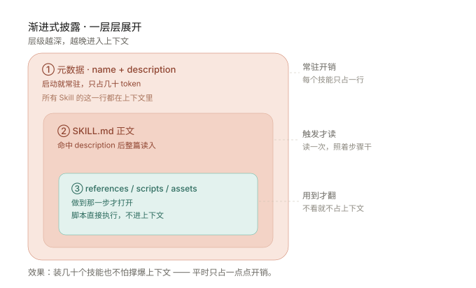

一句话：Skill（技能包）＝一个装着 SKILL.md（指令） 的文件夹，把做某类事的步骤、知识、甚至脚本打包成可复用单元；Agent 遇到相关任务才按描述加载它——像给新员工的入职手册。
“Skills are folders that include instructions, scripts, and resources that Claude can load when needed. Claude will only access a skill when it’s relevant to the task at hand.”
翻译：Skill 是装着“指令、脚本、资源”的文件夹，Agent 只在任务相关时才加载它——平时并不占地方。
2025-12-18，Anthropic 把该格式发布为开放标准（agentskills.io）；GitHub Copilot、Cursor、Gemini CLI、OpenAI Codex 等多家 Agent 产品已兼容同一格式——写一次，到处能用。
Skill = 一个目录；最简只需 SKILL.md（本仓库的 concept-microcourse 同款结构）
my-skill/ ├── SKILL.md # 必填：YAML 头 + 指令正文 ├── references/ # 可选：按需读取的参考文档（如设计规范） ├── scripts/ # 可选：可执行代码 ├── assets/ # 可选：模板等资源
放在仓库的项目级 Skill（如本仓库 .workbuddy/skills/concept-microcourse/）就是同一套规则：SKILL.md 开头写 name 与 description，正文是可复用的工作流程。
这正是 Anthropic 强调的“模型在上下文聚焦、信息相关时表现更好”——与“上下文”那页讲的注意力预算是同一件事。

📘 新员工入职手册
招人时不可能把公司所有规范记在招聘广告里（会爆上下文）。入职手册随取随用：要做报销时翻报销章、要做 PPT 时翻模板章。
🥋 “加载”功夫的功夫片
Anthropic 内部调侃过：Skill 就像《黑客帝国》里 Neo 一键加载格斗技能——平时不带，需要时“嗞”地进入脑子。
用户开口：“学一下大模型的上下文，做一页能自测的 HTML”。
自动匹配：Agent 扫描 .workbuddy/skills/，发现 concept-microcourse 的 description 命中“概念速学 HTML”。
只读正文：把 SKILL.md 全文读入上下文，按里面 7 步流程组织内容——不靠每次口头重讲。
按需开文件：要排版时读 references/design-tokens.md，要出题时读 references/quiz-engine.md。
稳定产出：同样的风格、同样的自测引擎，换成任何一个新概念都能复用——这就是“沉淀可复用任务知识”。
同样的事若没有 Skill：每次都把设计规范、测验 JS、排版规则再解释一遍——浪费上下文、且结果漂移。有了 Skill，方法与产出一次比一次一致。
examples/minimal-skill/SKILL.md（节选）
--- name: minimal-skill description: 把任意文本整理成 3 条要点的摘要。 当用户说“帮我总结 / 提炼要点”时使用。 --- ## 步骤 1. 先读全文，提取关键论据。 2. 输出 3 条要点，每条 ≤ 一行。
Skill = 含 SKILL.md 的文件夹：YAML 头写 name/description，正文写“怎么做”。
本质是程序性知识包：把专家的“做法”沉淀成可复用单元。
平时只暴露一行简介，命中才加载全文——省上下文、还稳。
和工具互补：工具给“能力”，Skill 给“用法”；Agent 当组织者。
安全第一：只装可信来源，陌生 Skill 先审计脚本再放行。
入门（基础）→ 进阶（原理）→ 挑战（细节辨析）。选完即判对错。达标线：入门 4/4 ＋ 进阶 ≥3 ＋ 挑战 ≥2
本页只依据一手来源：官方发布说明、开放标准主页与官方示例仓库；另附思想最接近的学术论文。
核对方式：链接于 2026-09-10 逐条联网访问确认可达；论文的标题、作者与提交日期取自 arXiv 官方 API 返回值，编号可在 arxiv.org 直接检索复核。以上均为公开的官方文档或学术论文原文（不含二手转述）；如需引用正式发表版本，请以论文页面标注的会议 / 期刊信息为准。 补充说明：Agent Skills 是 2025 年发布的工业界开放标准，目前尚无同行评议论文；上列为思想脉络上最接近的学术工作。